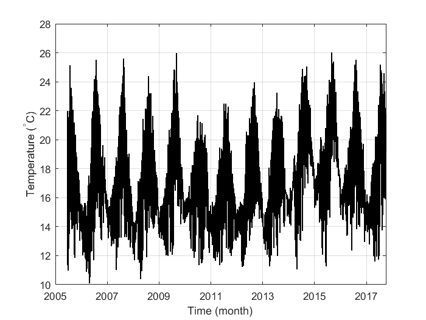
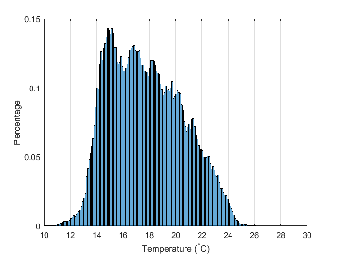

Contents
Ren_data1_week1.m
HW week 1, Look at Temperatures from Scripps Pier
A. Ren September 29, 2017
timeperiod = 'from2005to2017';
switch timeperiod
case 'only2017'
fileloca = 'http://sccoos.org/thredds/dodsC/autoss/scripps_pier-2017.nc';
SP_temp_2017 = ncread(fileloca, 'temperature');
SP_time_2017 = ncread(fileloca, 'time');
SP_depth_2017 = ncread(fileloca, 'depth');
case 'from2005to2017'
yearlist = 2005:2017;
SP_temp_2017 = [];
SP_time_2017 = [];
SP_depth_2017 = [];
for n = 1:length(yearlist);
yearof = yearlist(n);
fileloca = sprintf('http://sccoos.org/thredds/dodsC/autoss/scripps_pier-%04d.nc', yearof);
newtemp = ncread(fileloca, 'temperature');
newtime = ncread(fileloca, 'time');
newdepth = ncread(fileloca, 'depth');
SP_temp_2017 = [SP_temp_2017; newtemp];
SP_time_2017 = [SP_time_2017; newtime];
SP_depth_2017 = [SP_depth_2017; newdepth];
end
badvalue = find(SP_temp_2017 > 30);
SP_temp_2017(badvalue) = NaN;
SP_time_2017(badvalue) = NaN;
SP_depth_2017(badvalue) = NaN;
end
SP_temp_2017 = double(SP_temp_2017);
SP_time_2017 = double(SP_time_2017);
SP_depth_2017 = double(SP_depth_2017);
SP_time_2017_mtlabtime = datetime(SP_time_2017, 'ConvertFrom', ...
'posixtime', 'TimeZone', 'America/Los_Angeles');
figure('Name', 'Temperature in 2017')
plot(SP_time_2017_mtlabtime, SP_temp_2017, 'k', 'LineWidth', 1)
switch timeperiod
case 'only2017'
dateticknum = 3;
datetick('x', dateticknum)
xlim([datenum(2016, 12, 31) datenum(2017, 10, 1)])
case 'from2005to2017'
xlim([datenum(2004, 12, 31) datenum(2017, 10, 1)])
end
grid on
ylabel('Temperature (^{\circ}C)')
xlabel('Time (month)')

meantemp2017 = mean(SP_temp_2017, 'omitnan'); disp('mean = '); disp(meantemp2017)
stddtemp2017 = std(SP_temp_2017, 'omitnan'); disp('std = '); disp(stddtemp2017)
mean =
17.7763
std =
2.7743
figure('Name', 'Probability Density Function, Temperature 2017')
h = histogram(SP_temp_2017, 'Normalization', 'pdf');
grid on
xlabel('Temperature (^{\circ}C)')
ylabel('Percentage')
xlim([10 30])
